Who's Eli? ۶ৎ
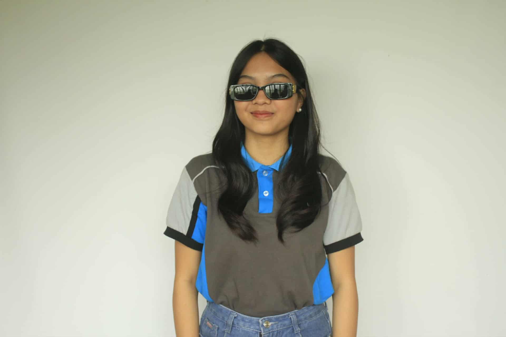
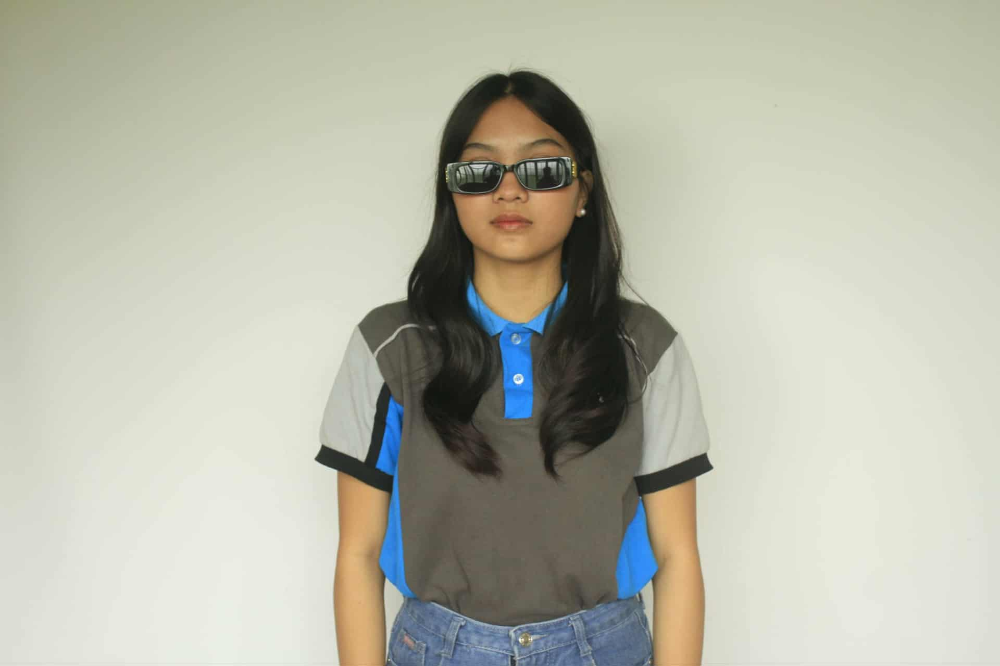
Maria Yllona Luna Palomar
I’m an aspiring IT professional with a passion for creating clean, functional, and user-friendly websites. I enjoy solving problems through code and continuously learning new technologies to improve my skills in web development and design.
Lil me 𑣲

- Age: 19 years old
- Height: 5'3
- Weight: 55 kg
- Address: Guis-Guis Talon, Sitio Dalampasigan, Sariaya Quezon
- Gender: Female
- Nationality: Filipino
- Status: Single
Go to ♡
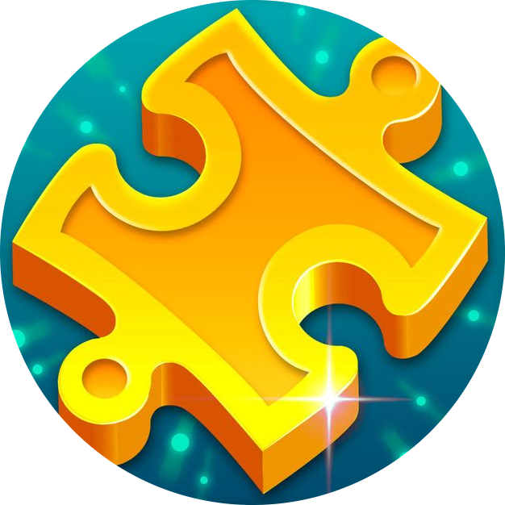
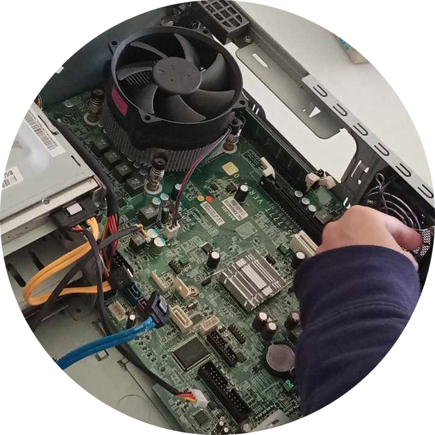
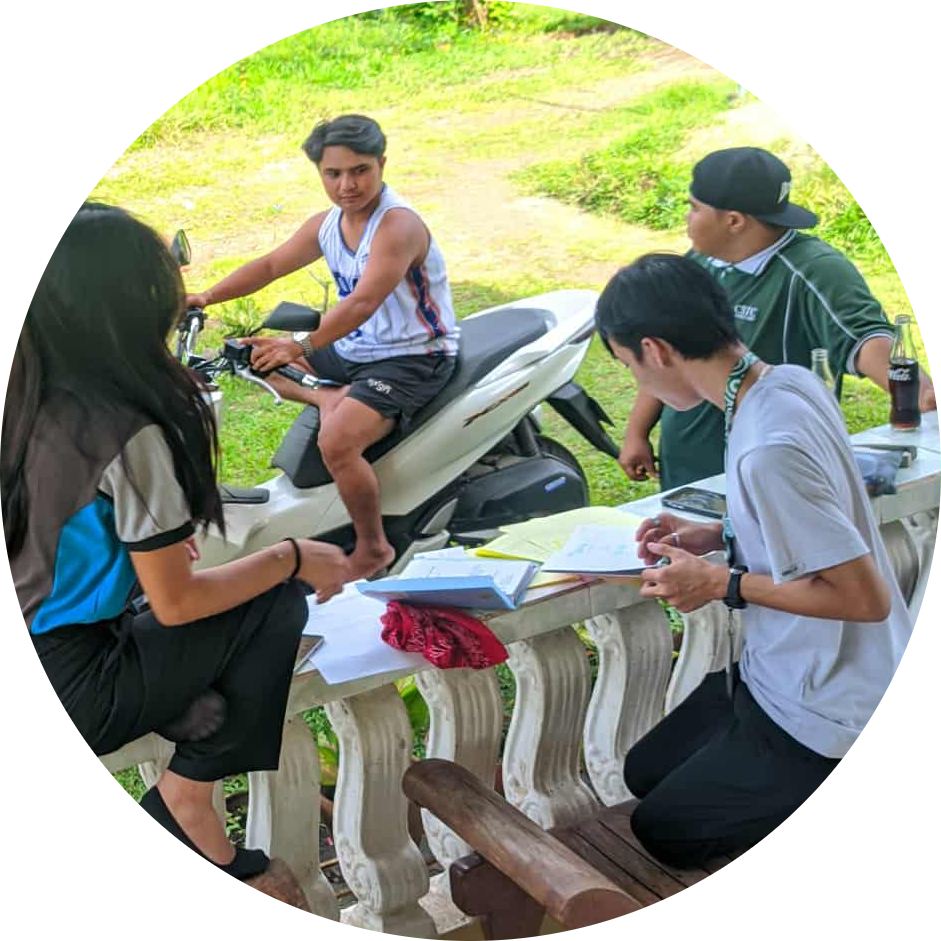
- Digital Design: UI/UX Wireframing, Canva
- Technical Skills: Troubleshooting, Computer Assembly
- Soft Skills: Time Management, Teamwork
Study Journey -`♡´-
- Bignay 1 Elementary School
Graduated With High Honor
Bignay 1, Sariaya Quezon - Lutucan Integrated National High School
Graduated With High Honor (Information and Communication Technology)
Lutucan Malabag, Sariaya Quezon - CSTC Sariaya
College of Sciences, Technology and Communication (CSTC) Sariaya Campus
Bachelor of Science in Information Technology
Milestones ꪆৎ

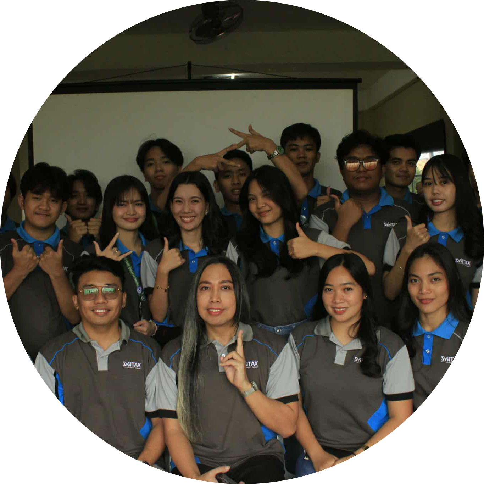
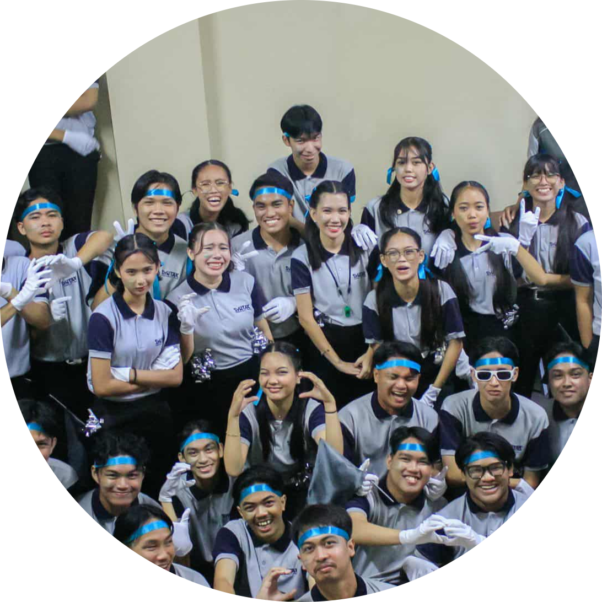
- With High Honor — Consistently achieved academic excellence from elementary to senior high school.
- Active Member of IT-related Organizations — Participated in events and activities that enhance leadership and technical skills.
- Volunteer & Student Leader — Served as a class representative and active IT event volunteer.
What I Love ᢉ𐭩
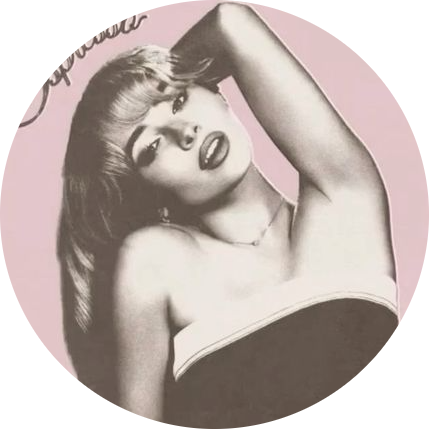

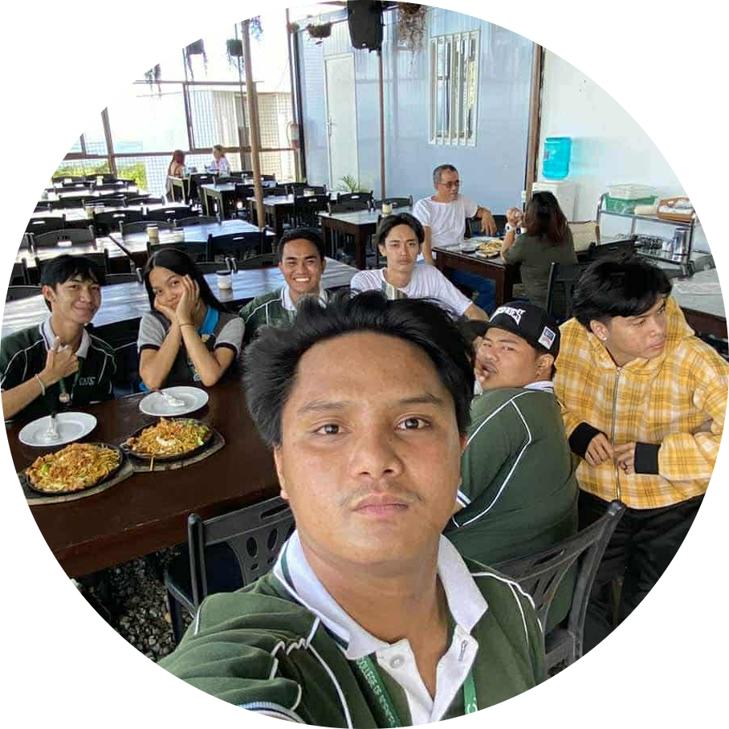
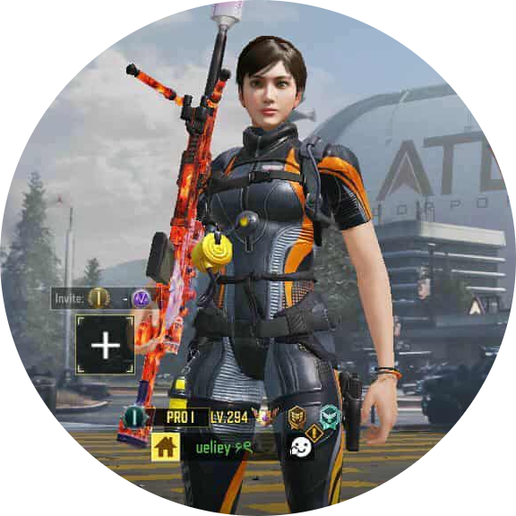
- Listening to music
- Watching movies and series
- Hanging out with friends
- Playing mobile games
Stuff I Worked on.ᐟ.ᐟ
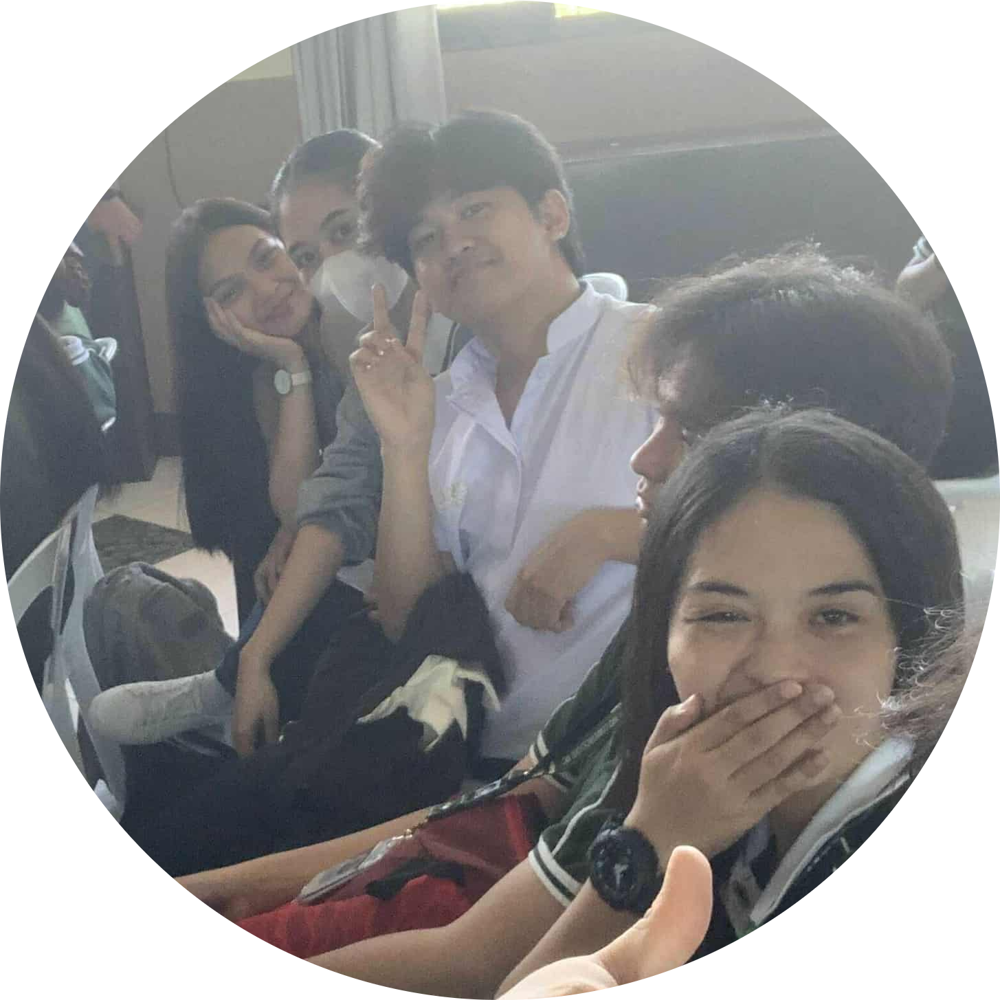
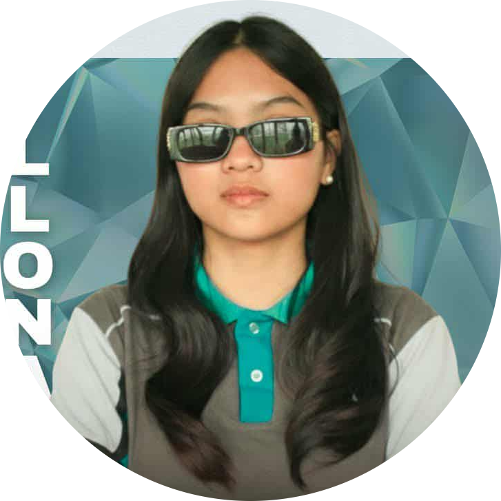
- Attended IT Department Seminars
- Project and Career Organizer
- Creative Portfolio Website
Drop a message ❀
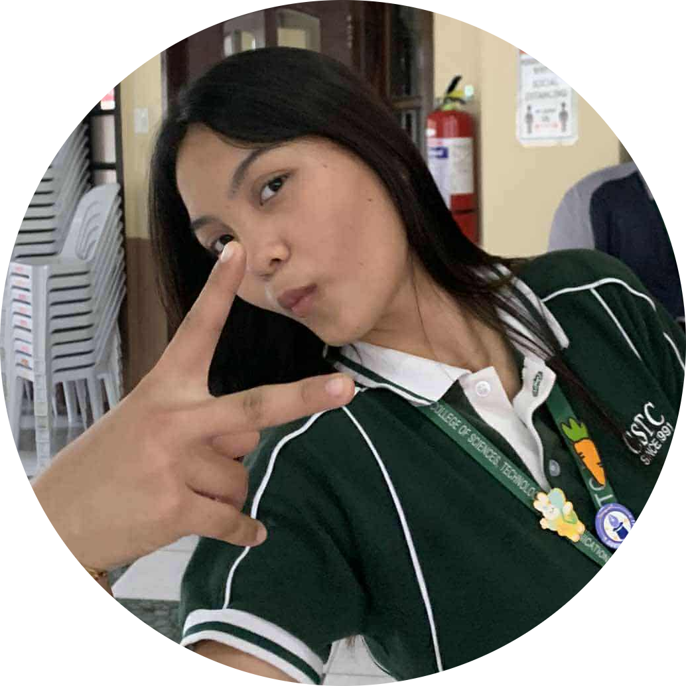
- 20244021@cstc.edu.ph
- Maria Yllona
- ueliey
- 09945964800
- 09305407707
- mari3xa